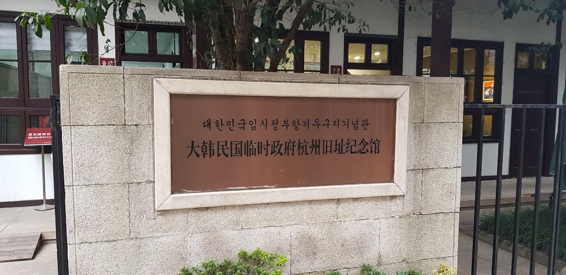
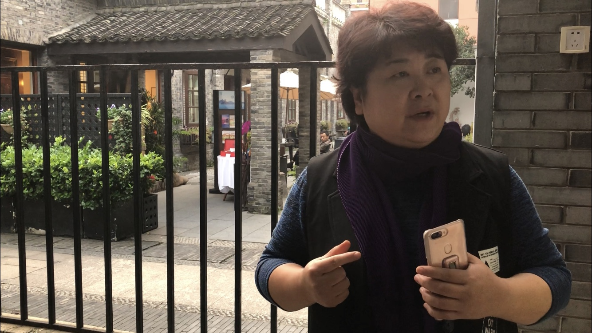
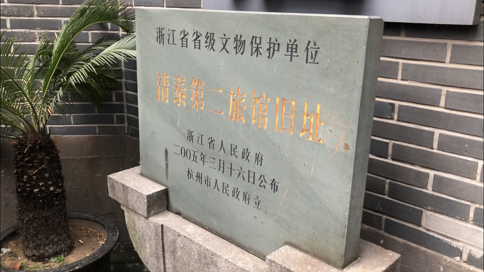
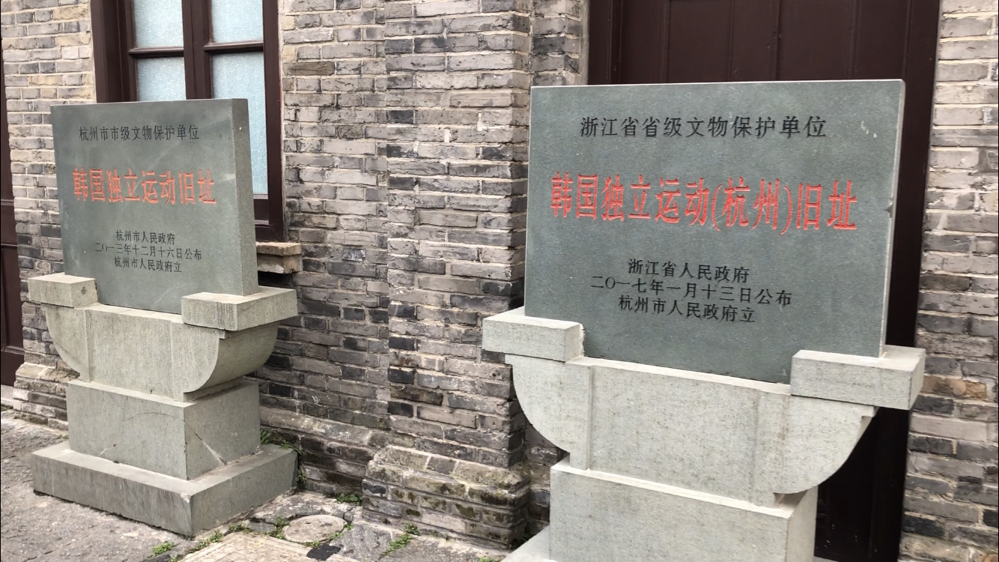
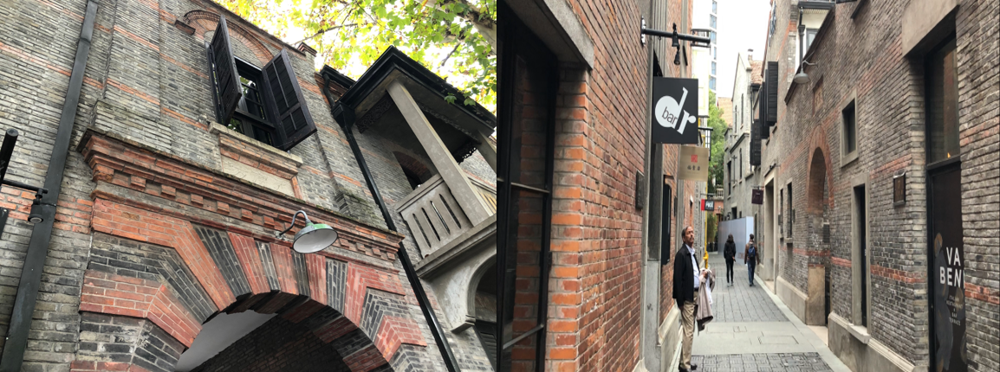

공간을 찾으려는/지키려는/알리려는 사람들
그들의 노력은 헛되지 않았다
[inter-view] 항저우 임시정부 기념관 부관장, 최란
‘대한민국 임시정부는 어느 곳에 있었을까요?’라는 질문에 대부분은 ‘상하이’라고 말할 것이다. 1919년 3월 1일 일제의 지배에 항거해 한반도 전역에서 대규모 독립운동이 일어났고, 이를 계기로 대한민국 첫 임시정부가 같은 해 4월 11일 상하이에서 수립되었기 때문이다. 하지만 상하이 임시정부는 대한민국 임시정부 역사의 일부분일 뿐이다. 임시정부는 일본의 끊임없는 위협으로 1919년부터 광복 전까지 중국 내에서만 상하이(上海, 1919), 항저우(杭州,1932), 전장(鎭江,1935), 창사(長沙,1937), 광둥(廣東,1938), 류저우(柳州, 1938), 치장(綦江,1939), 충칭(重慶,1940) 등으로 옮겨 다닐 수밖에 없었다. 그렇다면 이 8개의 임시정부 관련 유적지 중 유일하게 중국 정부로부터 ‘국가급 항일전쟁 시설 및 유적지’로 등록된 곳은 어딜까? 바로 항저우 대한민국 임시정부 청사이다. 독립운동 사적지의 관리 주체인 중국 정부가 이곳이 다른 곳들에 비해 더 가치 있다고 판단해서일까?
■ 모든 기회는 준비된 자에게 있다
“(항저우 임시정부 청사는) 국가급 항일 전쟁 시설 기념지로서는 첫 번째로 들어갔어요. 항저우에서 유일할 뿐만 아니라 중국 내 한국 독립운동 역사 유적지 중에도 국가급으로 인정된 사적은 이것 하나뿐이에요. 상하이 임시정부는 수립되고 나서 13년 있었고, 충칭에서는 5년 동안 있었지만 (그곳에서) 광복을 맞이했기 때문에 어떻게 보면 이미지가 더 크고, 임시정부의 규모도 잘 갖춰져 있어요. 그런데 왜 항저우가 되었느냐?”

> ‘대한민국임시정부 항저우구지 기념관’의 모습이다.

> 최 부관장은 어떻게 항저우 임정청사가 국가급 항전시설로 거듭나게 되었는지 설명하고 있다.
항저우 임시정부 기념관에서 부관장직을 맡고 있는 최란(54)씨는 2014년 항저우 기념관이 국가급 유적지로 선정되자 전임 관장에게 주중 한국대사관을 비롯해 많은 기관들로부터 전화가 빗발쳤다고 기억했다. 모두 예상치 못했던 일이기 때문이다. 최 부관장은 “저희는 언론에 공표한 것은 아니지만 우리들의 노력에 대해 떳떳하게 얘기할 수 있어요. ‘모든 기회는 준비된 자에게 있다.’ 애기도 울어야 젖을 주잖아요? 항저우시청이 있지만 시청부 사람들도 잘 몰라요. 이런 존재가 있는지.”라고 말했다.
항저우구지 기념관을 지켜오던 사람들은 평소에도 이곳을 널리 알리는 것에 관심을 두고, 늘 준비해오고 있었다. “현재 관장님, 전임 관장님과 저, 이렇게 셋이서 밥 먹고 산책 삼아서 유적지를 돌고 하면서, 시도 때도 없이 사진을 찍어요. 정리를 해서는 저장성(浙江省)의 문물관리부 있잖아요? 거기도 보내주고, 여기도 보내주고 하면서 우리 존재를 알리는 거에요. 알아봐달라고. 우리 기념관 뿐만 아니라 사흥방(思鑫坊, 한국독립당 사무소 터) 그 쪽에 가게 되면 아파트도 있고 한데 그 벽에 독립운동과 관련된 인물, 역사 이런 것도 애니메이션처럼 만들어 놓은 게 있어요. 거기도 분명하게 한국의 국보, 김구 선생님 이런 게 적혀있어요. 이런 거 또 찍어서 정리해주고.”
기회는 우연히 찾아왔다. 이듬해인 2015년은 대한민국 광복 70주년이자 중국의 항일전쟁 승리 70주년이었고, 중앙 정부의 민정국에서 자료사진 같은 것이 있냐며 연락이 왔다. 그들은 항상 준비해왔던 파일을 보내주었고, 그 결과 항저우 임시정부청사는 국가급 항일유적지로 지정된 것이다.
임시정부는 1932년 4월 29일, 상하이의 홍커우 공원에서 열린 천황 탄신일(천장절) 기념 및 상하이사변 축하행사에서 윤봉길 의사가 폭탄의거를 벌인 후 일제의 탄압이 거세지자, 항저우로 거처를 옮기게 되었다. 초기에는 청태 제2여사 32호에 임시정부 사무실을 마련했고, 첫 국무위원회의를 개최하였다. 이들은 일제의 감시 속에 이듬해 1월에는 중국 국민당 정부의 도움을 받아 호변촌 23호로 옮기게 되었다. 당시에도 여관으로 사용되었던 청태 제2여사는 현재 한정(汉庭) 호텔로, 현재 기념관이 위치한 임시정부 유적지는 호변촌 23호 일대를 매입해 건물로 재정비한 것이다. 두 곳 모두 이곳이 과거 한국의 독립운동유적지였음을 알려주는 표지석이 그 앞에 놓여있다.

> 항저우의 첫번째 대한민국 임시정부 사무실이 있던 '청태 제2여관' 입구에 위치한 표지석이다.

> 임시정부는 일제의 탄압이 거세지자 국민당의 도움으로 호변촌(서호 옆)으로 거처를 옮기게 되었다. 이 자리에는 현재 항저우 임시정부 기념관이 들어섰다.
■ 한-중 공동 항일투쟁의 흔적
사실 이 호변촌 일대 임시정부 터의 발견에는 많은 이들의 노력이 있었다. 최 부관장은 “항주 사범대학에서 교직을 맡고 있는 최봉춘 선생님의 전문분야가 동아시아에 관한 역사문제였고, 한국 학자들과 교류를 하면서 이곳을 처음 발견하게 되었어요. 2007년에 이 기념관을 세우기 훨씬 이전부터 한국의 독립기념관, 국가보훈처 등과 관계된 전문가 분들과 함께 이 연구를 이끌어나갔었고, 이곳에 살던 거주민의 증언, 다른 교수님들의 논문이나 말들을 참고했을 때 이곳이 확실히 그 터라는 것을 알게 되었습니다.” 하지만 이 당시까지만 해도 한-중 수교 이전이었기 때문에 여기서 더 나아갈 수 없었다.
1992년 한중수교가 성사되고 양국 관계가 좋아지면서 항저우시는 2002년부터 5년에 걸쳐 거금을 들여 청사를 복원하였다. 2012년에는 한국 독립기념관과 협력하여 전시실 내용을 보완했고 그해 11월 재개관하였다. 한국의 유적지라고 볼 수 있음에도 중국 정부는 왜 이와 같은 막대한 지원을 해준 것일까? 항저우시가 어느 정도 경제적 여유가 있기 때문이지만 그보다 더 중요한 이유는 따로 있었다. 최 부관장은 이에 대해 “중국과 한국의 국민들이 공동 항쟁을 했다고 보고, 임정 청사 유적지를 한국 것으로 보는 것이 아니라 함께 일궈낸 것이라고 생각해요. 한국과 중국은 일본을 놓고 말하면 다 피해자가 되잖아요. 같은 피해자의 입장에서 어려운 시기에 함께 항일투쟁을 했다는 증거가 중요한 것입니다.” 라고 밝혔다.
그런데 작년 4월 즈음에 한국에서는 이와 사뭇 배치되는 보도가 나왔다. 중국 정부의 압력으로 이곳 항저우 임정청사가 문을 닫았다는 것이다. 중국 공안 당국은 사드에 반대하는 중국인들로 인한 청사 내 전시물 훼손을 우려해 휴관을 요청했지만, 사실상 이는 사드 배치에 대한 중국의 감정적 조치라는 것이다. 만일 이 내용이 사실이라면 우리의 유적지가 국가급 유적지로 대우를 받는다 한들 국가 간 정치·외교적 이해관계에서조차 자유롭지 못하는 것이다. 하지만 당시에도 이곳에서 근무하고 있었던 최 부관장과의 인터뷰를 통해 이는 거짓으로 판명하였다. 최 부관장은 항저우 임정청사를 폐쇄한 적이 없다고 강조하며, “건물 수리를 했으나 옛날 건물이다보니 벽 속에 전기선이 어떻게 들어가있는지 몰라 자꾸 합선 및 정전문제가 생겨났다. (이 때문에) 안전문제상 한 달 동안 수리를 한 것이다.”라고 밝혔다. 이에 덧붙여 당시의 한국 기자들이 사드를 가지고 문장을 만들고 싶은데 크게 중국에서 동향이 없어 이러한 검증되지 않은 뉴스를 퍼뜨린 것이라고 말했다.
■ 폐허가 되어버린 곳들
그렇다면 중국 내 모든 독립운동 유적지들이 항저우처럼 보존되고 있는 것일까? 전혀 아니다. 난징 시 교외에 위치한 천녕사(天寧寺)는 조선혁명간부학교의 옛터로서 1935년에 항일투쟁을 위한 군대가 만들어진 독립운동 유적지임에도 불구하고 폐허로 방치되어있다. 이정표도 없이 험한 산길을 오르고 나서야 나타나는 이곳에 김원봉을 포함한 조선혁명간부학교 3기생, 44명의 흔적은 전혀 찾아볼 수 없다. 주변 마을 사람들에 의해 도교사원으로 이용되고 있었다.

> 난징 시 교외의 황룡산에 위치한 천녕사(天宁寺)의 모습이다. 80여년 전 독립을 위해 무력투쟁했던 이들의 자취는 찾아볼 수 없다.

> 상하이 임시정부 시절, 이곳 영경방(永慶坊)은 요인들의 숙소가 있었던 곳이다.
이 외에도 상하이 임시정부 시기, 김구를 포함한 요인들의 숙소가 있었던 ‘영경방(永慶坊)’ 골목은 그 일대의 번화가인 신천지(新天地) 거리 개발로 인해 상업화된 카페 골목으로 변모했다. 들어가는 길 입구 위에 한자로 된 현판만 남아있을 뿐 조그만 안내판도 없다. 영경방에 대해서 미리 알고 오지 않는 이상 어느 누구도 이곳이 과거 임시정부 요인들이 거처를 마련했던 곳임을 알아차리지 못한다.
왜 같은 독립운동 유적지임에도 불구하고, 어느 것은 국가급 유적지로 대우를 받는 반면 어느 것은 그 당시의 흔적조차 찾아볼 수 없을까? 반공을 내세워 독립운동가더라도 사회주의에 몸담았던 인물과 관련된 장소는 보존과 관리를 소홀히해온 탓도 있지만 근본적인 이유는 다른 데 있다. 이러한 공간을 왜 기억하고, 보존해야 하는지 필요성을 느끼지 못하는 이들이 대다수이기 때문이다.
중국에 가기 전 대부분 유적지의 모습을 사진을 통해, 문헌을 통해 미리 확인했음에도 불구하고 현장에서 직접 실체로 접했을 때 피부로 느껴지는 것이 매우 달랐다. 해당 장소는 물리적 요소만을 담고 있는 것이 아니라 우리로 하여금 다양한 감정을 느끼게 하였다. 일부 장소들에서는 소름이 돋았다. 쟈싱(嘉興)의 김구 피난처에서는 감시 속에 늘 쫓기는 삶을 살았던 김구의 삶이, 난징의 이제항위안소에서는 어린 나이에 일본 군인에게 성적 유린을 당해야만 했던 위안부 할머니의 비참한 삶이 고스란히 나의 감각으로 전해지는 것이었다. 중국내 임시정부 유적지에는 항일독립운동의 역사와 시간, 그곳에 존재했던 이들의 모든 것이 담겨져있다. 이를 방치한다는 것은 조국을 되찾아 후대에 자유를 물려주기 위해, 투쟁하고 희생해왔던 모든 이들의 노력을 무참히 짓밟는 것이 아닐까.
중국에는 상하이를 비롯한 항저우, 창사, 류저우, 충칭 등 5곳에 임시정부 청사 유적지가 복원되어있다. 가장 높은 방문자수를 보유하고 있는 상하이 임시정부는 1993년부터 상하이시 황포구 인민정부의 관리 하에 '황포구 문물 보호단위 제174호(區級)'로 관리되고 있다. 항저우 임시정부 청사는 '국가급 항전 시설 및 유적지’(2014)로 지정되기 1년 여 전부터 항저우시에서 관리하는 시급(市級)문물보호단위로 보호되어왔고, 창사(長沙) 임정 청사 또한 2007년 중국 정부에 의해 복구되어 2009년부터 시급으로 관리되고 있다. 류저우(柳州)에는 임시정부 청사역할을 했다고 여겨지는 낙군사(樂群社)에 ‘대한민국 임시정부 항일투쟁활동진열관'이 들어섰고, 2006년에 '중국 전국중점문물보호단위'로 지정되었으나 아직까지 이 건물을 청사가 사용했다는 결정적 증거는 없다. 마지막으로 충칭(重慶)임시정부의 경우 환국 전 마지막까지 사용되었던 연화지(蓮花池) 청사가 충칭시 시급문물보호단위(市級)로 지정되어 충칭시 문화국에서 관리중이다.